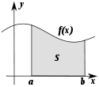

Криволінійна трапеція та її площа
Головна
Криволінійною трапецією називається фігура, обмежена графіком невід'ємної на відрізку функції, віссю Ох і прямими x=a і x=b.
Площу S криволінійної трапеції, обмеженої графіком функції y=f(x) і прямими y=0, x=a i x=b, можна обчислити за формулою S = F(b) – F(a)

< Назад
Вперед >